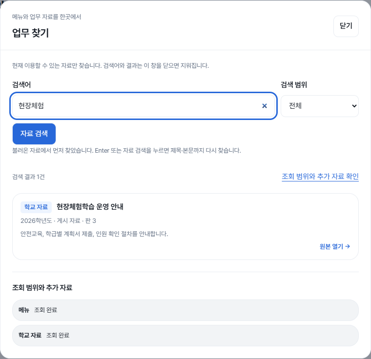
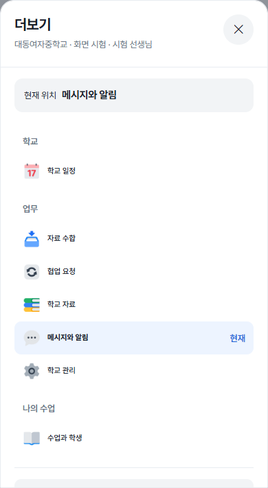
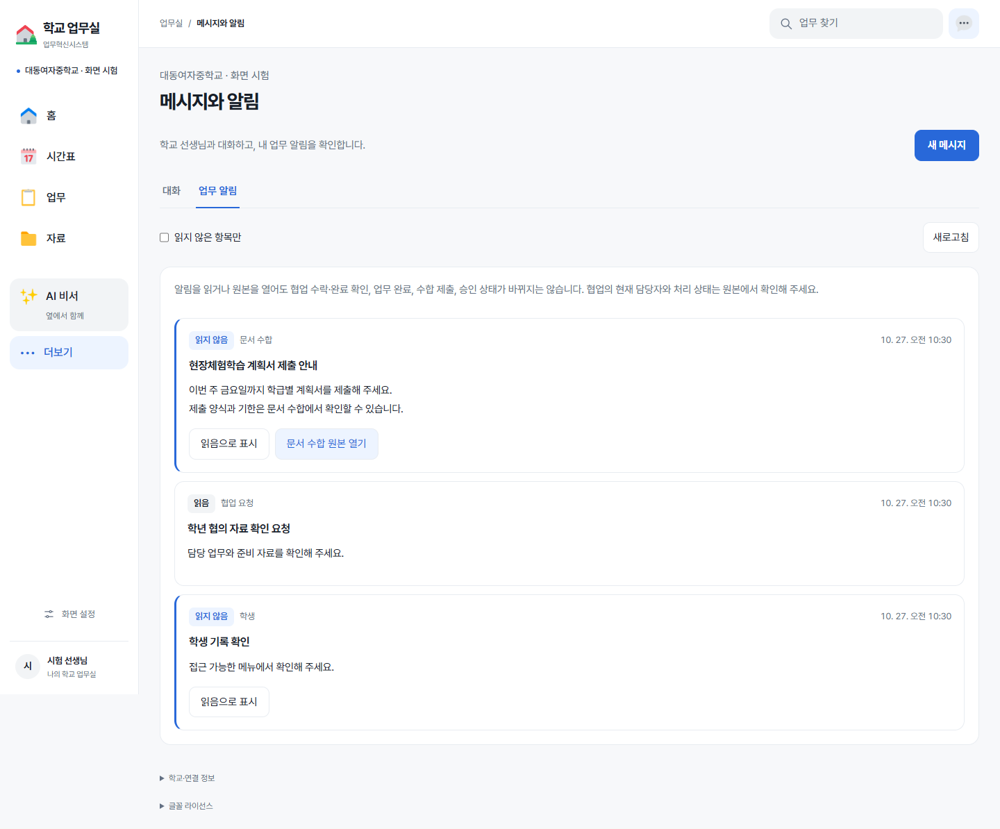
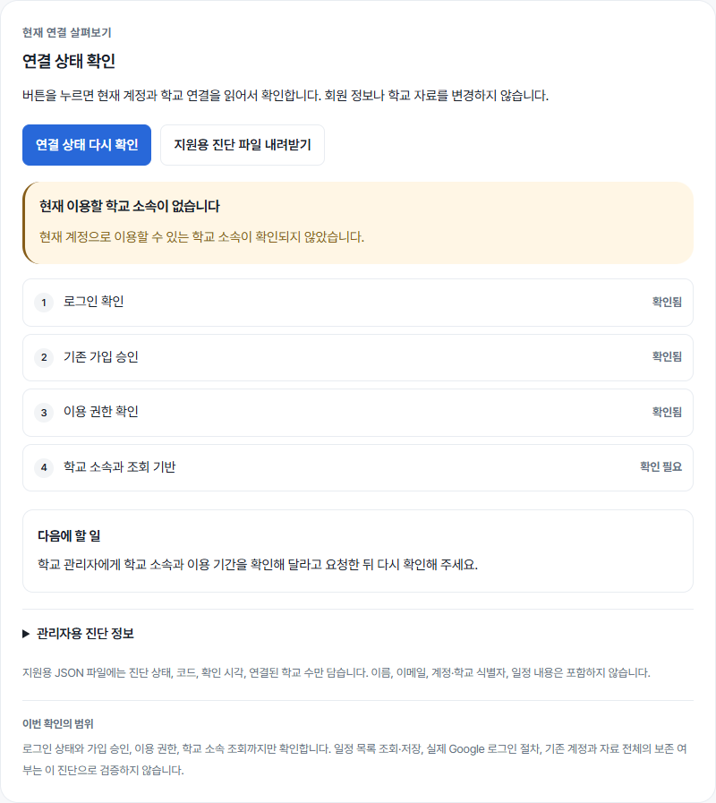
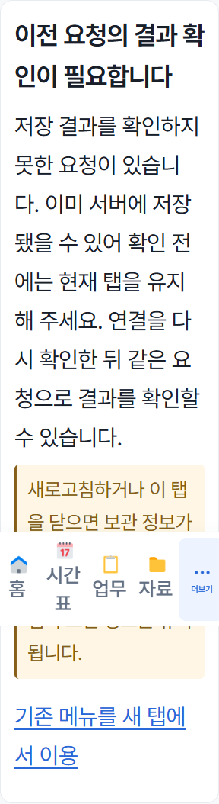

공통 메뉴·검색·알림 화면
실제 React 화면 · 합성 자료 · 운영 DB와 연결하지 않은 자동 시험 캡처입니다.
업무 검색
자료 종류·판·설명과 조회 상태를 함께 확인

모바일 더보기
현재 위치와 선택한 메뉴를 표시

업무 알림
읽음·출처·시각과 원본 버튼을 분리

연결 점검
확인 단계와 다음 행동을 명확히 표시

입력·요청 복구
보관 입력과 결과 미상 요청을 계속 보호
